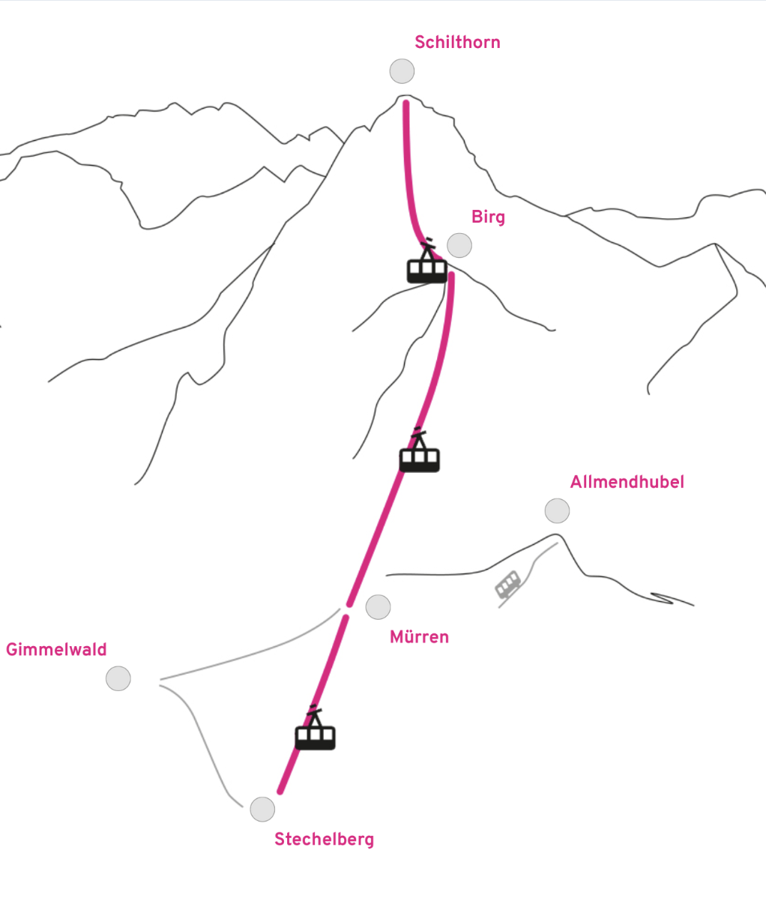

🚧 Draft plan — still being worked out! Nothing's booked yet and plenty may change. Have a read and tell us if it sounds like your kind of adventure. 🚧 计划草案——还在完善中！目前尚未预订，很多细节还会变。先看看，如果这样的旅程适合你，告诉我们～
✨ The short version
🗓️ Two days, one night, right after the wedding (Sun–Mon, Aug 16–17).
🏔️ Up to the Schilthorn, above Lauterbrunnen — a jaw-dropping corner of the Alps.
🥾🚠 Hike up or ride the cable car — meet in the middle for the cliffside Thrill Walk.
🛌 Day trip, or stay overnight and summit on Monday — your call.
👉 For now, just tell us if you're keen. Times & prices to follow.
✨ 简短版
🗓️ 婚礼后两天一晚（周日至周一，8月16–17日）。
🏔️ 登上劳特布龙嫩之上的雪朗峰（Schilthorn）——阿尔卑斯最震撼的角落之一。
🥾🚠 徒步或坐缆车上山——在半山会合，一起走悬崖惊险步道（Thrill Walk）。
🛌 一日游，或过夜周一冲顶——你自己定。
👉 现在只想知道你有没有兴趣。时间和票价之后补充。

🚞 The line: valley (Stechelberg) → Mürren → Birg → Schilthorn.
🥾 On foot: Mürren → hut ~2h40 · hut → Birg ~40 min · Birg → summit ~1h30–1h40.
🚞 缆车线路：山谷（Stechelberg）→ 米伦（Mürren）→ 比尔格（Birg）→ 雪朗峰（Schilthorn）。
🥾 徒步：米伦 → 山屋 约2小时40分 · 山屋 → 比尔格 约40分 · 比尔格 → 山顶 约1小时30–40分。
🌅 Sunday morning we leave Zurich together — one group by car, one by train — and meet in the valley at Stechelberg.
🚡 From there a cable car takes us up to Mürren, a car-free mountain village where the adventure begins.
🌅 周日上午我们一起从苏黎世出发——一队开车，一队坐火车——在山谷的 Stechelberg 会合。
🚡 再坐缆车上到 米伦（Mürren），一个无车的山村，旅程从这里开始。
🥾 Hikers climb from Mürren, past the Schilthornhütte, up to Birg (~3½ hours).
🚠 Everyone else rides the cable car up in minutes — and can carry on to the summit for the views first.
🌉 We all meet at Birg for the Thrill Walk — glass floors and walkways bolted to the cliff.
🥾 徒步的人从米伦出发，经过雪朗峰山屋，一路爬到比尔格（约3个半小时）。
🚠 其他人坐缆车几分钟就上去——还可以先到山顶看风景。
🌉 大家在 比尔格（Birg） 会合，一起走 惊险步道（Thrill Walk）——固定在悬崖上的玻璃地板和栈道。
🏡 After the Thrill Walk, day-trippers ride the cable car down and head home.
🛖 The overnight crew walks ~40 min down to the Schilthornhütte — a classic Swiss mountain hut (SAC-style): simple shared bunk rooms, hearty food and huge views. Cosy and authentic — not a hotel, and that's the charm.
🎒 Pack light — you're sleeping indoors, so just a small overnight bag, one warm layer for the evening and good shoes. Daytime up top is usually mild.
🌅 Monday we head up to the summit (Piz Gloria) for the 360° views, then back down. Want to leave early? Catch the first cable car down.
🏡 走完惊险步道，一日游的人坐缆车下山回家。
🛖 过夜的一队徒步约40分钟下到 雪朗峰山屋（Schilthornhütte）——一座地道的瑞士高山小屋（SAC 山屋）：简单的多人床铺、暖心的饭菜，还有壮阔的景色。温馨、原汁原味——不是酒店，而这正是它的魅力。
🎒 行李从简——是睡在室内，只需一个小过夜包、一件晚上保暖的外套，加一双好鞋。山上白天通常挺暖和。
🌅 周一我们上到山顶（Piz Gloria）看360°全景，再下山。想早点走？赶头班缆车下山。
What you pay depends on your Swiss rail card. Two legs: the train to the valley, and the cable car up. Rough per-person figures:
🚆 Train (Zurich ↔ valley): free with a Swiss Travel Pass · ~CHF 30 each way with a Half-Fare Card (Halbtax) · ~CHF 60 each way with neither.
🚠 Cable car (up to the summit & back): ~CHF 46 with a Swiss Travel Pass · ~CHF 58 with a Half-Fare Card · ~CHF 115 with neither.
🚗 Driving skips the train cost — but then you're tied to the car for the way back.
💛 No pass? It adds up quickly — tell us and we'll help you find the cheapest way up.
花多少取决于你的瑞士交通卡。行程分两段：到山谷的火车，和上山的缆车。每人大致费用：
🚆 火车（苏黎世 ↔ 山谷）：持瑞士旅行通票免费 · 持半价卡（Halbtax）单程约 30 瑞郎 · 都没有则单程约 60 瑞郎。
🚠 缆车（上到山顶往返）：持瑞士旅行通票约 46 瑞郎 · 持半价卡约 58 瑞郎 · 都没有约 115 瑞郎。
🚗 开车能省下火车钱——但回程就得跟着车走。
💛 没有任何卡？费用会不低——告诉我们，我们帮你找最省的方式。
📝 Still to come: exact times, final dates and route. We'll keep this page updated! 📝 之后补充：具体时间、最终日期和路线。我们会持续更新本页面！